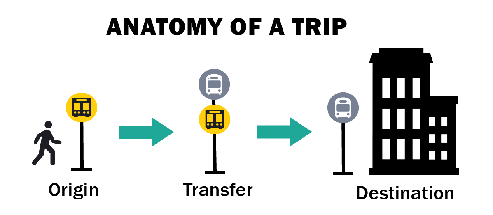

Street-Level Infrastructure Distribution Engine
This is a tool designed to help decide where bus amenities should be allocated. A bus amenity is for our purposes either: a bench, a shelter, or a real time data display. In a broader sense, a bus amenity is something that improves a user's experience when taking the bus.
A bus amenity is something that exists at a bus stop in order to improve the rider's experience. Amenities can be a large number of things, ranging from bike racks to benches to shelters to heaters. For our analysis, we are considering a bus amenity to be either a bench, a shelter, or real time data display.
Just follow the steps in the tool bar on the left hand side of the tool! For more info on each step, click the button.
This step allows you to choose what stops will be considered for analysis. You can choose a category of stops to be considered by toggling the switch next to the category.
To further refine your dataset, click the filter
button.
Surface-level Light Rail
This includes surface level, non-gated Green Line stops and the stops served by the Mattapan Trolly. These stops, while not technically bus stops, are serviced by transit modes that are functionally similar to buses.
Silver Line Stops
This includes silver line stops. The silver line is BRT (bus rapid transit). Due to high ridership and low average headway, the silver line stops are categorized separately from streetside bus stops. We
also have excluded SL3 because we do not have sufficient data.
Streetside Bus Stops
These are all the other bus stops.
Check out our More Info section to see how the tool was created!
This step is assessing each bus stop to see how in need of new amenities it is. You can use the range sliders to weight eahc category as you see fit. The tool then takes how you weighted each and uses that weight to assign a rank to each stop.
Vulnerability
This a measure of what populations are being served by the new bus amenities. Vulnerable populations for this model include how many households without vehicles, majority people of color households, and low income households,
are in the area around each bus stop. This category also includes data about how many seniors and TAP riders use each stop per day. The more vulnerable the population being served by the stop, the higher the score.

Origin Ridership
This is a measure of how many people begin their MBTA journey at a given bus stop each day. Bus stops with a higher score have more people riding from there.
Transfer Ridership
This is a measure of how many people transfer to a bus at a given bus stop each day. Bus stops with a higher score have more people transferring to a bus from there.
Check out the "More Info" button at the bottom of the tool bar
Lower Priority
Higher Priority
The actual model hasn't been finalized yet, so this section will be filled out later.
For each stop, we caluclated a z score using the following formula:
For more info about OPMI, check out our website
Processed with by interns